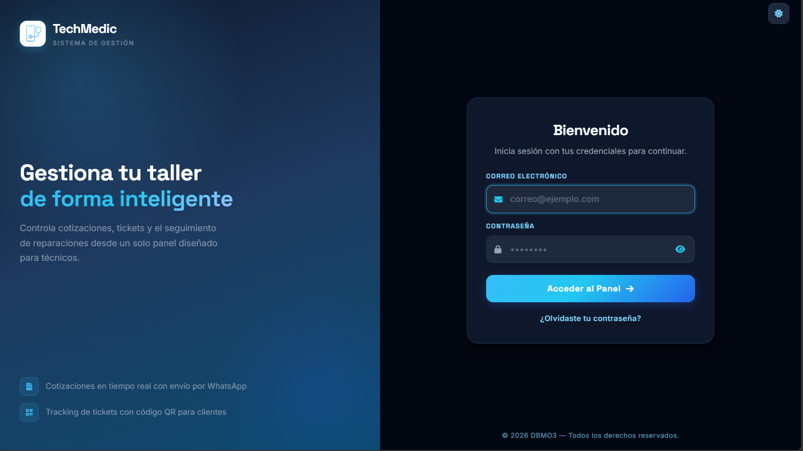
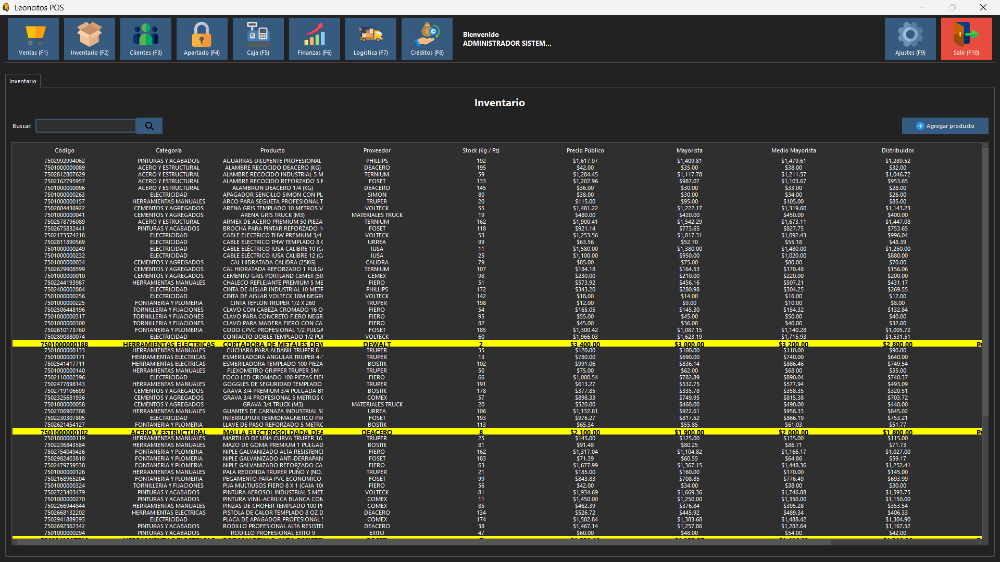
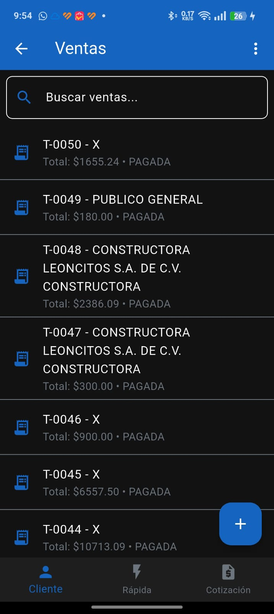
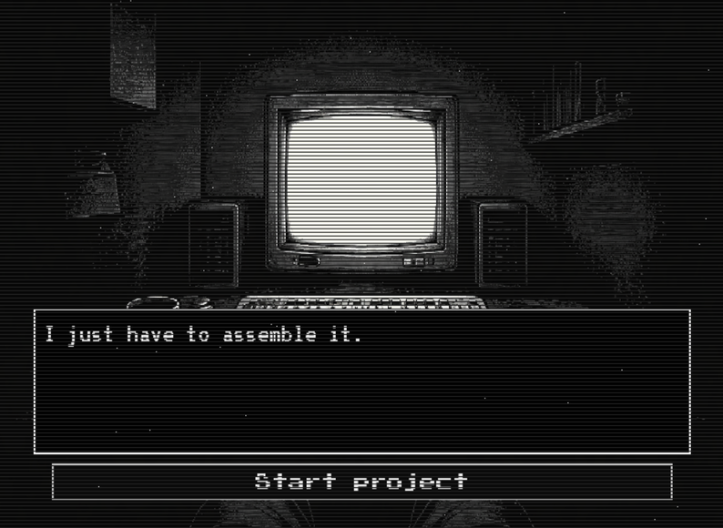
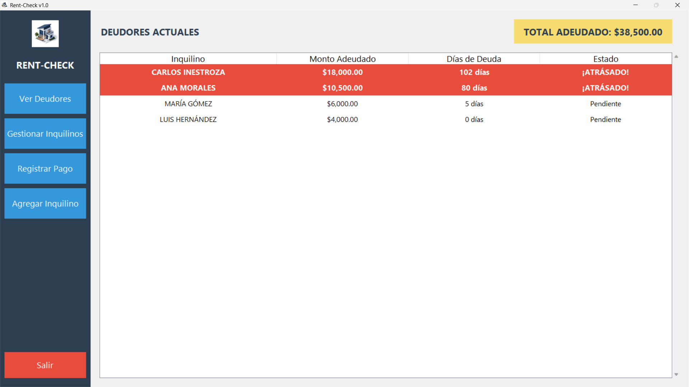

> NEURAL_LINK... CONNECTED
> USER: D.BERNAL
> STATUS: ACTIVE
NETRUNNER
SYSTEM_SECURE_ONLINE_
Desarrollador de software especializado en soluciones tácticas, arquitectura de sistemas híbridos, aplicaciones de escritorio robustas e interfaces de alto rendimiento.
Showcase // Proyectos

TechMedic
Web AppPlataforma web basada en tickets para gestionar la reparación de equipos (teléfonos, consolas, laptops). Ofrece portal para clientes con seguimiento en tiempo real, notificaciones automáticas y emisión de órdenes en PDF con código QR.

Leoncitos POS
Desktop AppSistema ERP y Punto de Venta de escritorio de alta resistencia desarrollado para Construtienda Leoncitos. Sincroniza inventario local con copias contables en la nube.

Leoncitos POS Mobile
Mobile AppCliente móvil secundario (versión recortada) para el personal de piso. Registra ventas rápidas y altas de mercancías directamente desde los pasillos del negocio.

A Mind Overflow
VideogameNovela visual de terror psicológico interactiva. El relato documentado del colapso mental de un desarrollador atrapado en un ciclo eterno de código, estática y fragmentos de realidad.

Rent-Check
Desktop AppAplicación Windows offline para propietarios de rentas. Realiza auditoría automática en tiempo real de deudores y calcula la mora acumulada por inquilino.
Tecnologías // Habilidades
Protocolos de Comunicación
¿Tienes una infraestructura digital que requiera blindaje, desarrollo táctico o una aplicación a medida? Inicia un canal de datos seguro conmigo a través de cualquiera de los siguientes medios de transferencia: